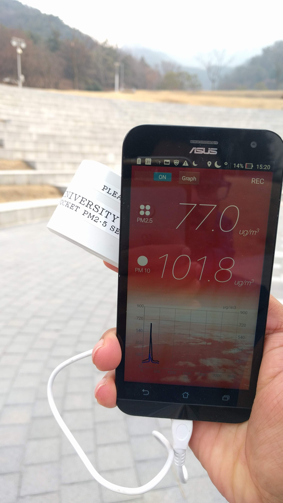
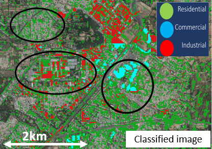
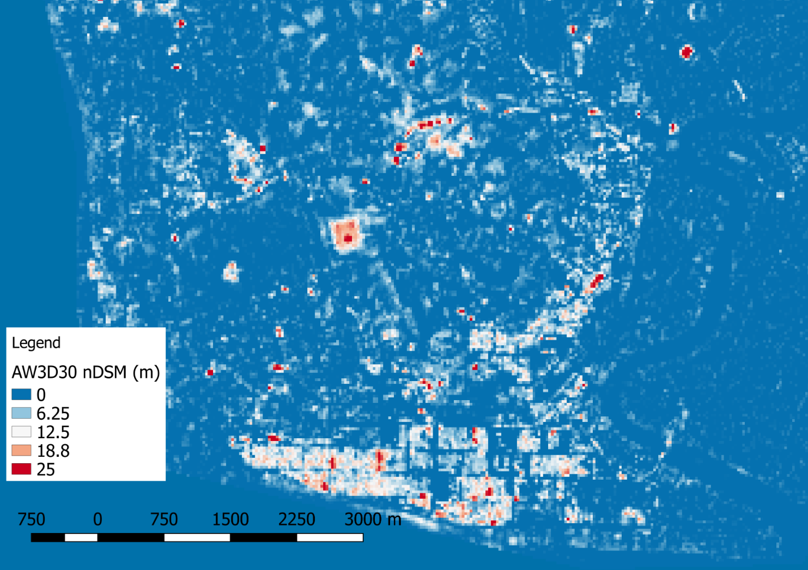
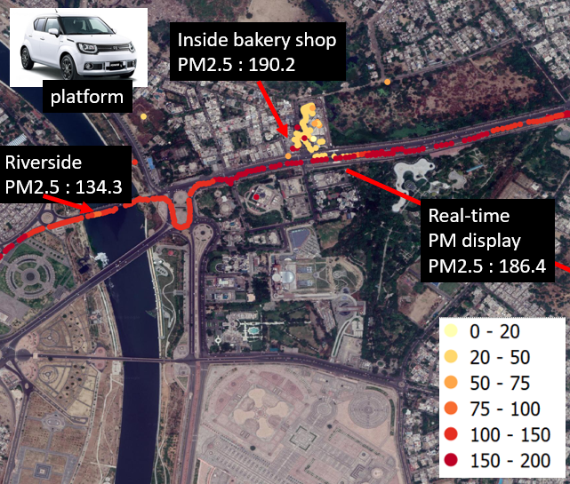

<!DOCTYPE html>
<!-- saved from url=(0034)http://www.cs.toronto.edu/~slwang/ -->
<html><div class="oneNoteWebClipperIsInstalledOnThisBrowser" style="display: none;"></div><head><meta http-equiv="Content-Type" content="text/html; charset=UTF-8">

<title>Prakhar Misra</title>
<link href="./src/gly.css" rel="stylesheet" type="text/css">

<script type="text/javascript" async="" src="./src/ga.js"></script><script type="text/javascript" async="" src="./src/ga(1).js"></script><script type="text/javascript">

  var _gaq = _gaq || [];
  _gaq.push(['_setAccount', 'UA-543380-2']);
  _gaq.push(['_trackPageview']);

  (function() {
    var ga = document.createElement('script'); ga.type = 'text/javascript'; ga.async = true;
    ga.src = ('https:' == document.location.protocol ? 'https://ssl' : 'http://www') + '.google-analytics.com/ga.js';
    var s = document.getElementsByTagName('script')[0]; s.parentNode.insertBefore(ga, s);
  })();

</script>
</head>

<body>

<div class="container"> 
    <div style="text-align: right;">
    <a href="./index.html">English</a> / Japanese
  </div>    
    <table width="95%" border="0" align="center">
      <tbody><tr>
        <td width="20%"><div align="center"></div></td>
        <td width="80%"><div align="center">
          <table width="110%" border="0">
            <tbody><tr>
            <td width="10%" height="0" valign="top"></td>
            <td width="81%" valign="top">
              <table width="79%" border="0" align="left">
                <tbody><tr>
                  <td align="left"><span class="textpageheader">Prakhar Misra</span></td>
                </tr>
              </tbody></table></td>
            </tr>
            <tr>
                <td width="10%" height="55" valign="top"> </td>
                <td width="200%" valign="top">
                <p style="line-height:120%">
                  <a href="https://www.iis.u-tokyo.ac.jp/en/"> Institute of Industrial Science, The University of Tokyo </a><br>
                  <a href="http://wtlab.iis.u-tokyo.ac.jp/">Wataru Takeuchi Lab</a> <br>   Post-doctoral Researcher <br>
                </p>
            <!--
			<p style="line-height:120%">
            <a href="http://wtlab.iis.u-tokyo.ac.jp/"> WTlab </a> <br> Post Doc fellow <br>
                  </p>
				  -->
              </tr>
			  
                <tr>
            <td width="12%" height="20" valign="top"> Address:</td>
            <td width="150%" valign="top">
                 Komaba, Meguro-ku, Tokyo 153-8505
          </tr>
		  
          <tr>
            <td height="1">&nbsp Email:</td>
            <td>prakharmisra90 at gmail.com </td>
          </tr>
		  
          <td width="10%" height="10"> </a></td>
          <td ><a href="./document/CV_Prakhar_Misra.pdf">[Curriculum Vitae]</a></td>
          <td> </td>
         </tbody></table>
        </div></td>
        <td width="10%"><div align="center">
          <table width="100%" border="0">
          </table>
        </div></td>
      </tr>
  </tbody></table>
<hr>
<p><br>
私は<a href="http://wtlab.iis.u-tokyo.ac.jp/">環境および災害研究所のリモートセンシング</a>のポスドク研究員です2018年8月からの産業科<a href = "https： //www.iis.u-tokyo.ac.jp/">学研究所</a>。
  私の特定の研究関心は、都市のリモートセンシングと大気汚染にあります。私の主な研究対象は、リモートセンシングされた大気汚染と土地利用データセットの使用です
  開発途上国の社会経済的成長から生じる都市の大気質問題を研究する。私は、エンドツーエンドのリモートセンシングデータセットベースのフレームワークを構築し、エコヘルスへの影響に関するポリシーシナリオベースの研究を行っています。
 <p>
  <a href="http://wtlab.iis.u-tokyo.ac.jp/wataru/"の指導の下で<b>東京大学</ b>（2018）からリモートセンシングの博士号を取得しました。 >竹内航博士</a>で、インドの都市大気質に対する社会経済成長の影響を調査しました。
  以前は、Bの<a href= "https://www.iitk.ac.in/new/onkar-dikshit"> Dr. Onkar Dikshit </a>の下で、偏光SAR分類のための多重解像度セグメンテーションアルゴリズムの開発にも取り組んでいました。 .Tech.-M.Tech。で
  <b>インド工科大学カンプール</ b>。 EXL Analytics（2013-2015）のデータサイエンティストとして、バークレイズクレジットカードのリスク予測モデルを構築しました。
  これらの経験は、リモートセンシングデータ処理と時系列モデリングに向けた私の学習において重要でした。

  <!--I accept students who already obtained or bring to apply <a href="http://www.mext.go.jp/a_menu/koutou/ryugaku/boshu/1346643.htm"> MEXT</a> scholarship. Please send your resume.<br></p>
  -->
<p class="textsectionheader2">Recent News</p>
<hr>
<p>
</p><ul type="SQUARE">
</li><li>(2019/09/19) Introduced air quality issues and brick kiln detection around New Delhi using Deep Learning at Institut Teknologi Bandung (ITB), Indonesia</a>
</li><li>(2019/09/17) Workshop on "Cloud based satellite image processing: Introduction to GEE" at ICOIRS, Bandung, Indonesia</a>
</li><li>(2019/08/28) Poster presented at "Symposium on Data Driven Future Society"</a>
</li><li>(2019/08/28) Paper accepted in Atmosphere. "Impact of Urban Growth on Air Quality in Indian Cities Using Hierarchical Bayesian Approach"</a>. <a href="https://www.mdpi.com/2073-4433/10/9/517">[Journal]</a>
</li><li>(2019/07/16) Talk at <a href= "https://lcluc.umd.edu/meetings/sari-searrin-meeting-and-training-malaysia-2019?page="> NASA LCLUC </a> for "Detecting Brick Kilns Around New Delhi Using PALSAR-2 Imagery With Deep Learning"</a>. <a href="https://lcluc.umd.edu/sites/default/files/lcluc_documents/SARI2019_Prakhar_MIsra_presentation2comFinalcom.pdf">[Slides]</a>
</li><li>(2018/12/20) Released open source building height extraction Python code based on earlier publication <a href="https://mprakhar.github.io//DSM2DTM"><i>DSM2DTM</i></a>. <a href="https://mprakhar.github.io//DSM2DTM">[Github]</a>


</li></ul>
<p></p> 
<p class="textsectionheader2">Projects</p><hr>
<table width="100%" border="0">
  <tbody>
  
     <tr>
      <td width="26%"></td>
      <td width="4%"> </td>
      <td width="68%"><p class="papertext"><strong>
        Urban Air Quality monitoring, modelling</strong><br>
        <strong><a href="https://mprakhar.github.io/">Prakhar Misra</a></strong>, Aya Fujikawa, Ryoichi Imasu, Wataru Takeuchi <br>
        <a href="http://www.mdpi.com/2072-4292/9/8/851">[Publication]</a> <a href="https://www.mdpi.com/2072-4292/9/8/812/htm">[Publication]</a>  </p></td>
      <td>&nbsp;</td>
    </tr>
  
     <tr>
      <td width="26%"></td>
      <td width="4%"> </td>
      <td width="68%"><p class="papertext"><strong>
        Mapping Urban Land-use</strong><br>
        <strong><a href="https://mprakhar.github.io/">Prakhar Misra</a></strong>, Wataru Takeuchi <br>
        <a href="https://www.researchgate.net/publication/333916547_A_NOVEL_TECHNIQUE_FOR_ESTIMATING_EXPANSION_OF_RESIDENTIAL_COMMERCIAL_AND_INDUSTRIAL_REGIONS_IN_INDIAN_MEGACITIES">[ResearchGate]</a> <a href="https://prakhar.users.earthengine.app/view/urban-morphology---ludhiana">[GEE]</a> </p></td>
      <td>&nbsp;</td>
    </tr>


     <tr>
      <td width="26%"></td>
      <td width="4%"> </td>
      <td width="68%"><p class="papertext"><strong>
        Vertical Urban Growth with open DSM </strong><br>
        <strong><a href="https://mprakhar.github.io/">Prakhar Misra</a></strong>, Ram Avtar, Wataru Takeuchi <br>
        <a href="https://www.mdpi.com/2072-4292/10/12/2008">[Publication]</a> <a href="https://github.com/mprakhar/DSM2DTM">[Github]</a> </p></td>
      <td>&nbsp;</td>
    </tr>
	
	  <tr>
      <td width="26%"></td>
      <td width="4%"> </td>
      <td width="68%"><p class="papertext"><strong>
        PM2.5 exposure mapping using low-cost sensors </strong><br>
        <strong><a href="https://mprakhar.github.io/">Prakhar Misra</a></strong>, Wataru Takeuchi <br>
        <a href="./document/Mapping PM2.5 in Indian cities handout.pdf">[Presentation]</a> </p></td>
      <td>&nbsp;</td>
    </tr>
	 	
	
	  <tr>
      <td width="26%"></td>
      <td width="4%"> </td>
      <td width="68%"><p class="papertext"><strong>
        Remote sensing agromet cal/val </strong><br>
        Wataru Takeuchi, <strong><a href="https://mprakhar.github.io/">Prakhar Misra</a></strong><br>
        <a href="https://prakhar.users.earthengine.app/view/kbdithailand">[GEE]</a> </p></td>
      <td>&nbsp;</td>
    </tr>
	 
</tbody></table> 
<br>


<p class="textsectionheader2">Main Publications</p>
<hr>
Journal Articles
<ul>
<li><strong><a href="https://mprakhar.github.io/">Prakhar Misra</a></strong>, Ryoichi Imasu and Wataru Takeuchi，<br>
  <strong>Impact of Urban Growth on Air Quality in Indian Cities Using Hierarchical Bayesian Approach</strong>，
    <br>Atmoshpere 2019, 10(9)</li> <a href="http://www.mdpi.com/2072-4292/9/8/851">[Paper]</a>
</li>

<li><strong> HVT Minh, Ram Avtar, Geetha Mohan <a href="https://mprakhar.github.io/">Prakhar Misra</a></strong> and Masaaki Kurasaki，<br>
  <strong>Monitoring and Mapping of Rice Cropping Pattern in Flooding Area in the Vietnamese Mekong Delta Using Sentinel-1A Data: A Case of An Giang Province</strong>，
    <br>ISPRS International Journal of Geo-Information  2019, 8(5)</li> <a href="https://www.mdpi.com/2220-9964/8/5/211">[Paper]</a>
</li>

<li><strong><a href="https://mprakhar.github.io/">Prakhar Misra</a></strong>, Ram Avtar and Wataru Takeuchi，<br>
  <strong>Comparison of Digital Building Height Models Extracted from AW3D, TanDEM-X, ASTER, and SRTM Digital Surface Models over Yangon City</strong>，
    <br>Remote Sensing 2018, 10(12)</li> <a href="https://www.mdpi.com/2072-4292/10/12/2008">[Paper]</a><a href="https://mprakhar.github.io//DSM2DTM">[Github]</a>
</li>

<li><strong><a href="https://mprakhar.github.io/">Prakhar Misra</a></strong>, Aya Fujikawa and Wataru Takeuchi，<br>
  <strong>Novel Decomposition Scheme for Characterizing Urban Air Quality with MODIS</strong>，
    <br>Remote Sensing 2017, 9(8)</li> <a href="https://www.mdpi.com/2072-4292/9/8/812/htm">[Paper]</a>
</li>

<li><strong><a href="https://mprakhar.github.io/">Prakhar Misra</a></strong> and Wataru Takeuchi，<br>
  <strong>Air Quality Analysis Using Nighttime Light for Indian Urban Regions</strong>，
    <br>Malaysian Journal of Remote Sensing 2017, 9(8)</li> <a href="http://www.igrsm.com/mjrsgis/issues.html">[Paper]</a>
</li>


</ul><br clear="all"><p class="posted"> </p>


Conference Papers
<ul>

<li> <strong><a href="https://mprakhar.github.io/">Prakhar Misra</a></strong>, Wataru Takeuchi and Ryoichi Imasu<br>
<strong>Brick Kiln Detection In North India With Sentinel Imagery Using Deep Learning Of Small Datasets</strong>，
    <br>The 40th Asian Conference on Remote Sensing (ACRS), 2019
</li>

<li> Sovisoth E, Thakur VB, Nagai K <strong><a href="https://mprakhar.github.io/">Prakhar Misra</a></strong> and Wataru Takeuchi <br>
<strong>Estimation of the bridge construction year in Cambodia by the analysis of LANDSAT satellite data</strong>，
    <br>3rd ACF Symposium, Sapporo, Japan, 2019
</li>

<li> Ardhi Arbain, Ryoichi Imasu, <strong><a href="https://mprakhar.github.io/">Prakhar Misra</a></strong> and Wataru Takeuchi<br>
<strong>Estimating PM2.5 Emission from Brick Kiln Industry over Northern India with Numerical Model and Remote Sensing Observation </strong>，
    <br> EGU General Assembly, Vienna, Austria, 2019
</li>

<li> <strong><a href="https://mprakhar.github.io/">Prakhar Misra</a></strong> and Wataru Takeuchi<br>
<strong>Use of Google Trends for Assessing Sensitivity of Population to Urban Air Pollution </strong>，
    <br> 26th International Symposium on Remote Sensing, Taipei, Taiwan, 2019
</li>

<li> <strong><a href="https://mprakhar.github.io/">Prakhar Misra</a></strong> and Wataru Takeuchi<br>
<strong>A Novel Technique For Estimating Expansion Of Residential, Commercial and Industrial Regions In Indian Megacities. </strong>，
    <br> 17th International Symposium on Urban Safety Of Mega Cities In Asia, Hyderabad, India, 2018.
</li>

<li> <strong><a href="https://mprakhar.github.io/">Prakhar Misra</a></strong>, Ryoichi Imasu and Wataru Takeuchi<br>
<strong>Land-use Change Impacts on Urban Air Quality in India using Hierarchical Bayesian Approach. </strong>，
    <br> 39th Asian Conference of Remote Sensing, Kuala Lumpur, Malaysia, 2018.
</li>

<li> <strong><a href="https://mprakhar.github.io/">Prakhar Misra</a></strong> and Wataru Takeuchi<br>
<strong>Digital Surface Model (DSM) datasets for built-height estimation over Indian cities. </strong>，
    <br> 24th International Symposium on Remote Sensing, Nagoya, Japan, 2017.
</li>

<li> <strong><a href="https://mprakhar.github.io/">Prakhar Misra</a></strong> and Wataru Takeuchi<br>
<strong>Comparison of ASTER and AW3D derived Digital Surface Model datasets for built structure height estimation over Yangon city, Myanmar. </strong>，
    <br> 25th Institute of Industrial Science Forum Proceedings, Tokyo, Japan, 2017.
</li>

<li> <strong><a href="https://mprakhar.github.io/">Prakhar Misra</a></strong> and Wataru Takeuchi<br>
<strong>Assessing Impact of Economic Activities on Urban Air Quality in India by Nightlight and Atmospheric Measurement Datasets.</strong>，
    <br> 37th Asian Conference of Remote Sensing, Colombo, Sri Lanka, 2016.
</li>

<li> <strong><a href="https://mprakhar.github.io/">Prakhar Misra</a></strong> and Wataru Takeuchi<br>
<strong>Air Quality Analysis Using Nighttime Light for Indian Urban Regions. </strong>，
    <br> 8th IGRSM International Conference and Exhibition on Geospatial and Remote Sensing, Kuala Lumpur, Malaysia, 2016.
</li>

<li> <strong><a href="https://mprakhar.github.io/">Prakhar Misra</a></strong> and Wataru Takeuchi<br>
<strong>Analysis Of Air Quality In Indian Cities Using Remote Sensing And Economic Growth Parameters. </strong>，
    <br> 36th Asian Conference on Remote Sensing, Manila, Philippines, 2015.
</li>


</ul><br clear="all"><p class="posted"> </p>


<p class="textsectionheader2">HONORS AND AWARDS</p>
<hr>
<ul>
<li><span style="font-size: medium;">ACRS 2018 Best Paper Award Finalist</span></li>
<li><span style="font-size: medium;">IIS Forum 2018 Best Poster Award</span></li>

</ul><br clear="all"><p class="posted"> </p>

<p class="textsectionheader2">Grants</p>
<hr>
<ul>
<li><span style="font-size: medium;">Tateishi Science and Technology Foundation International Travel Grant, 2019 </span></li>
<li><span style="font-size: medium;">IIS Travel Grant for International Conference Research, 2019 </span></li>

</ul><br clear="all"><p class="posted"> </p>

<p class="textsectionheader2">Services</p>
<hr>
<ul>
<li><span style="font-size: medium;">Reviewer of Remote Sensing, Sustainability
</ul><br clear="all"><p class="posted"> </p>


</div></body></html>